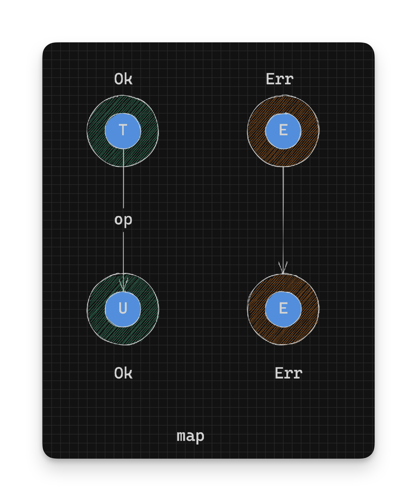

Working With Rust Result - Tranforming Values - Part 5
When using functions like map_or_else, we extracted the success and error values out of a Result, thereby losing our Result wrapper. What if you could run a function on the value within a Result and stay within the Result wrappers? Then you wouldn’t have to do all this pesky unwrapping until you needed the value.
map
The map function lets you transform a value within a Result:
pub fn map<U, F: FnOnce(T) -> U>(self, op: F) -> Result<U, E> {
match self {
Ok(t) => Ok(op(t)),
Err(e) => Err(e),
}
}In the above definition, the supplied function op is only run on the value within the Ok instance and the error value within the Err instance is left untouched.
// pseudocode
// Given: Result<T, E>
// Return type: Result<U, E>
op: T -> U // Convert success value to a U
Ok(t:T) -> op(t) -> U -> Ok(U) // Return converted value in Ok, as a Result<U, E>
Err(e:E) -> Err(e) // Return existing error as Result<U, E>
After function
opis used, the result is rewrapped in anOkconstructor. In theErrcase we also rewrap the error again. This might seem pointless, but this has to be done because the result type is changing from aResult<T, E>to aResult<U, E>and theErr(e)in the pattern match is of typeResult<T, E>. By creating a newErrinstance we convert the error to typeResult<U, E>.
In either case the Resultis converted from a Result<T, E> to a Result<U, E>. It’s important to note that we stay within a Result after running the function op. Here’s a simple example demonstrating this:
let result_ok_1: Result<u32, String> = Ok(1);
let result_ok_2: Result<u32, String> = result_ok_1.map(|n| n * 2); // Ok(2), multiplied by 2
let result_ok_3: Result<String, String> = result_ok_2.map(|n| format!("age: {}", n)); // Ok("age: 2"), converted to a String
let result_err_1: Result<u32, String> = Err("You have errors".to_owned());
let result_err_2: Result<u32, String> = result_err_1.map(|n| n * 2); // Err("You have errors"), no change
let result_err_3: Result<String, String> = result_err_2.map(|n| format!("age: {}", n)); // Err("You have errors"), no changeYou can also think of the map function as of type: Result<T -> U, E>; as in it runs a function on the success side of Result leaving the error side untouched.
- Continue on to Combining Results
- Back to TOC